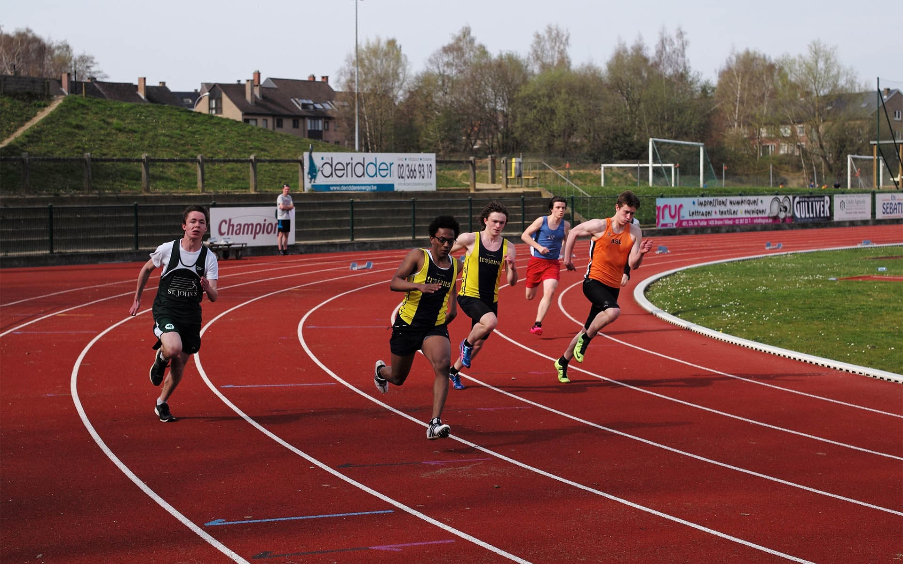
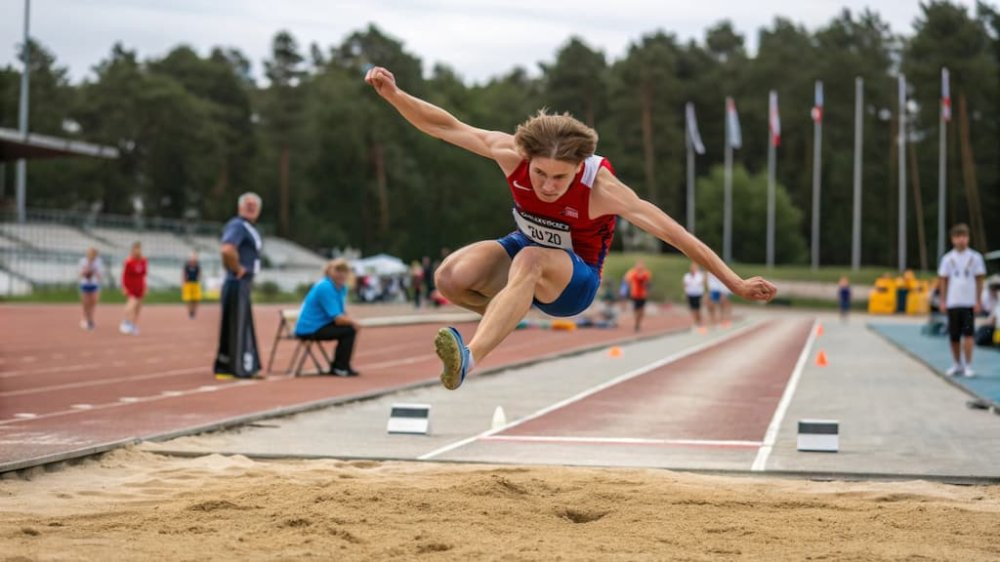
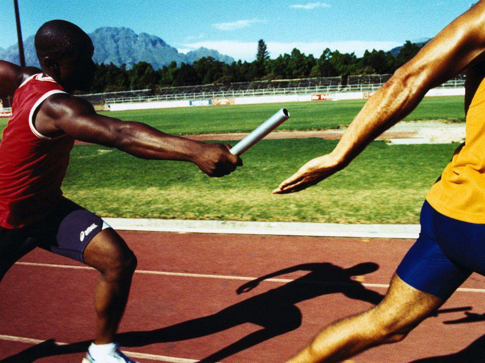

Лёгкая атлетика — один из древнейших и самых массовых видов спорта. Она включает в себя бег, прыжки, метания и многоборья. Я увлекаюсь лёгкой атлетикой, потому что это основа физического развития и отличная нагрузка на весь организм.
| Группа | Дисциплины |
|---|---|
| Беговые виды | Спринт (100 м, 200 м, 400 м), бег на средние и длинные дистанции, эстафеты, бег с барьерами |
| Прыжки | Прыжки в длину, прыжки в высоту, тройной прыжок, прыжки с шестом |
| Метания | Толкание ядра, метание копья, метание диска, метание молота |
| Многоборья | Десятиборье (мужчины), семиборье (женщины) |
Бег — самое доступное упражнение. Спринтерские дистанции развивают скорость и взрывную силу, а бег на длинные дистанции — выносливость и характер.

Прыжки в длину и в высоту требуют координации, гибкости и силы ног. Техника прыжка складывается из разбега, отталкивания, полёта и приземления.

Эстафетный бег — командный вид, где важно не только быстро бежать, но и грамотно передать палочку партнёру. Четыре бегуна, четыре этапа, одна цель — финишировать первыми.

«В спорте, как и в программировании, главное — регулярность тренировок и постепенное усложнение задач».